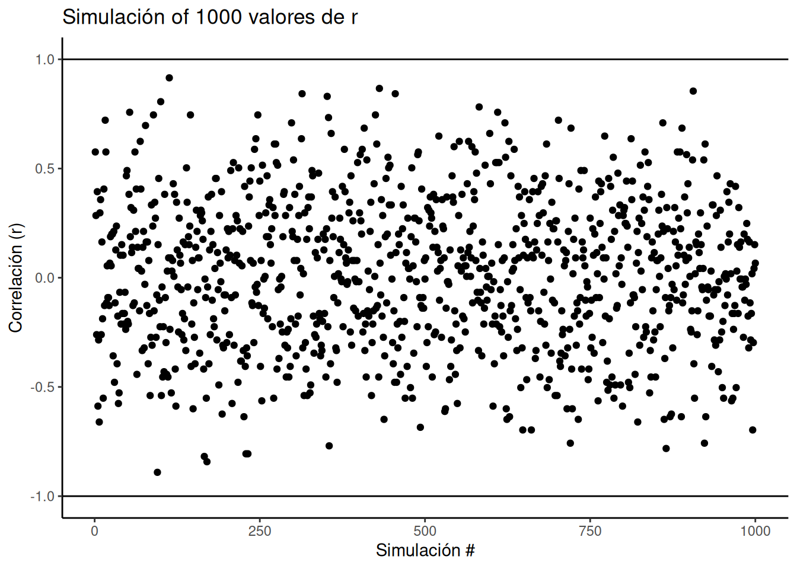
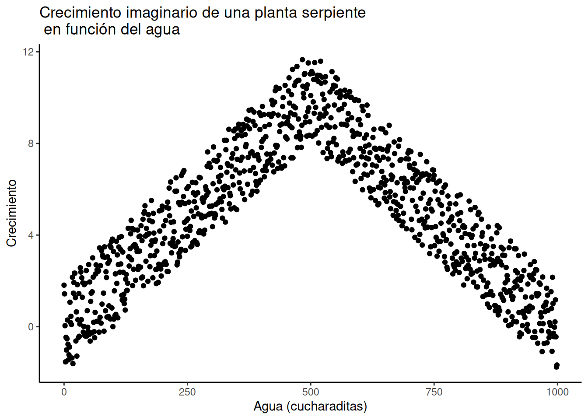
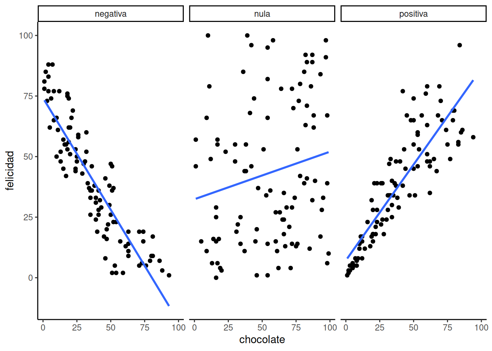

| sujeto | chocolate | felicidad |
|---|---|---|
| 1 | 1 | 1 |
| 2 | 2 | 2 |
| 3 | 3 | 2 |
| 4 | 2 | 3 |
| 5 | 4 | 4 |
| 6 | 6 | 5 |
| 7 | 4 | 6 |
| 8 | 7 | 8 |
| 9 | 8 | 7 |
| 10 | 8 | 7 |
4 Correlación
Notas
Traducido al español rioplatense por ChatGPT4-o bajo la supervisión de Álvaro Cabana.
La correlación no implica causalidad
—Todo docente de Estadística y Métodos de Investigación, alguna vez
En el capítulo anterior teníamos un conjunto de datos. Era demasiado para mirar y no tenía mucho sentido. Así que hablamos de cómo visualizar los datos usando gráficos e histogramas, y de cómo resumir un montón de números para determinar su tendencia central (lo común) y su variabilidad (lo diferente). Y todo estaba bien en el mundo.
Pero no olvidemos la gran razón por la que aprendimos sobre estadísticas descriptivas. La gran razón es que estamos interesados en responder preguntas usando datos.
Si estás buscando un tema central para tener en mente durante este curso, es este: ¿cómo hacemos para formular y responder preguntas usando datos?
En cada sección del libro, deberías conectar ese diálogo interno con esta pregunta, y pensar: ¿cómo lo que estoy aprendiendo me ayuda a responder preguntas con datos?
Advertencia anticipada: sabemos que es fácil olvidarse de esto cuando nos metemos en los detalles, así que vamos a intentar tirarte una cuerda cada tanto… recordá: estamos tratando de responder preguntas con datos.
En el capítulo dos empezamos con unos datos ficticios sobre la felicidad humana, ¿te acordás? Imaginamos que le pedíamos a muchas personas que nos dijeran cuán felices se sentían, y luego mirábamos los números que nos daban. Sigamos con ese experimento mental imaginario.
¿Qué obtenés cuando le pedís a la gente que use un número para describir cuán feliz está? Un montón de números. ¿Qué tipo de preguntas podés hacer con esos números? Bueno, podés mirar los valores y estimar sus propiedades generales, como ya hicimos. Esperamos que esos números nos digan cosas que más o menos ya sabemos. Que hay personas diferentes, y que cada persona tiene un nivel diferente de felicidad. Probablemente conociste a algunas personas realmente felices, y otras realmente infelices, y vos también seguramente tengas algún nivel de felicidad. “Buenísimo, ¡chocolate por la noticia!”.
Antes de seguir, también deberías tener una actitud crítica respecto a qué significan esos números. Por ejemplo, si forzás a las personas a calificar su felicidad con un número entre 0 y 100, ¿ese número refleja realmente cuán felices son? ¿Puede una persona saber cuán feliz está? ¿El formato de la pregunta influye en la respuesta? ¿La felicidad es siquiera algo real?. Estas son todas preguntas válidas sobre la validez del constructo (la felicidad misma) y del instrumento de medida (los números) que estás usando para cuantificarlo. Pero por ahora vamos a dejar esas preguntas importantes de lado, y vamos a asumir que la felicidad existe, y que nuestra medida de felicidad refleja algo sobre cuán feliz está la gente.
Bien. Una vez que medimos un poco de felicidad, seguro se te ocurren preguntas más importantes. Por ejemplo, ¿qué cosas hacen que la felicidad suba o baje? Si supieras qué la causa, ¿qué podrías hacer? ¿Qué tal aumentar tu propia felicidad?; o ayudar a personas que están infelices; o entender mejor por qué Ígor, el burrito de Winnie the Pooh, está siempre bajoneado; o presentar argumentos científicos válidos contra afirmaciones erróneas sobre las causas de la felicidad. Una teoría causal y un entendimiento de la felicidad servirían para todo eso. Entonces, ¿cómo hacemos para llegamos ahí?
Imaginá que sos una observadora alienígena. Llegás a la Tierra y escuchás hablar de esta cosa llamada “felicidad” que tienen las personas. Querés saber qué la causa. También descubrís que en el planeta Tierra hay muchas otras cosas. ¿Cuáles de todas esas cosas —te preguntás— causan la felicidad? ¿Cómo haría, tu yo-alienígena, para empezar a responder esa pregunta gigante?
Como persona que tiene felicidad, quizás ya tengas algunas corazonadas sobre qué la hace cambiar. Por ejemplo: el clima, las amistades, la música, el dinero, la educación, las drogas, los libros, las películas, las creencias, la personalidad, el color de tus zapatos, el largo de tus cejas, cuántos gatos ves por día, cuántas veces se demora el bondi, una provisión de por vida de chocolate, etcétera, etcétera (como diría Willy Wonka), podrían contribuir de alguna forma a la felicidad. Podría haber muchas causas distintas de la felicidad.
4.1 Si algo causara que otra cosa cambie, ¿cómo se vería eso?
Antes de salir a buscar las causas de la felicidad, deberíamos prepararnos con algunas herramientas analíticas que nos permitan identificar cómo se ve una relación causal. Si no nos preparamos para lo que podríamos encontrar, no vamos a saber cómo interpretar nuestros propios datos. En cambio, necesitamos anticipar cómo podrían verse esos datos. En concreto, necesitamos saber cómo lucen los datos cuando una cosa no causa a otra, y cómo lucen cuando sí la causa. Este capítulo trata justamente de esa preparación. Advertencia: vamos a descubrir cosas complejas. Por ejemplo, hay patrones que parecen mostrar que una cosa causa a otra, incluso cuando en realidad no la causa. Aguantá, ya vamos a verlo.
4.1.1 Charlie y la fábrica de chocolate
Imaginemos que la cantidad de chocolate que tiene una persona tiene una influencia causal sobre su nivel de felicidad. Sigamos imaginando que, como Charlie, cuanto más chocolate tenés, más feliz sos; y cuanto menos chocolate, menos feliz. Por último, como sospechamos que la felicidad depende también de muchas otras cosas en la vida de una persona, anticipamos que la relación entre el suministro de chocolate y la felicidad no va a ser perfecta. ¿Qué significan estas suposiciones para cómo deberían verse los datos?
El primer paso es recolectar unos datos imaginarios de 100 personas. Caminamos por ahí y le pedimos a las primeras 100 personas que respondan dos preguntas:
- ¿Cuánto chocolate tenés?
- ¿Cuán feliz estás?
Para hacerlo más sencillo, ambas escalas van de 0 a 100. En la escala de chocolate, 0 significa “sin chocolate” y 100 significa “suministro vitalicio de chocolate”. Cualquier otro número está en el medio. En la escala de felicidad, 0 es “nada de felicidad”, 100 es “toda la felicidad”, y los valores intermedios reflejan distintos grados de felicidad en el medio.
Acá tenés una muestra de datos de los primeros 10 sujetos imaginarios.
Le hicimos dos preguntas a cada persona, así que hay dos valores por persona: uno para su suministro de chocolate, y otro para su nivel de felicidad. Capaz ya notás cierta relación entre la cantidad de chocolate y el nivel de felicidad en la tabla. Para que esas relaciones se vean aún más claras, vamos a graficar todos los datos.
4.1.2 Diagramas de dispersión
Cuando tenés dos variables medidas, siempre podés convertirlas en puntos y mostrarlas en un diagrama de dispersión (scatter plot). Un gráfico de dispersión tiene un eje horizontal (x) y un eje vertical (y). Vos elegís qué variable va en qué eje. Vamos a poner el suministro de chocolate en el eje x, y el nivel de felicidad en el eje y. La Figura 4.1 muestra 100 puntos, uno por cada persona.

Capaz te estés preguntando: ¿por qué hay solo 100 puntos en el gráfico? ¿No recolectamos 100 medidas de chocolate y 100 de felicidad? ¿No debería haber 200 puntos?
No. Cada punto representa a una persona. Hay 100 personas, por lo tanto hay 100 puntos.
¿Qué significa cada punto? Cada punto tiene dos coordenadas: una en x (chocolate) y una en y (felicidad). El primer punto, abajo a la izquierda, representa a la primera persona de la tabla, que tenía casi 0 de chocolate y casi 0 de felicidad. Podés mirar cualquier punto y trazar una línea recta hacia abajo hasta el eje x: eso te dice cuán “chocolatada” está esa persona. Si trazás una línea recta hacia la izquierda hasta el eje y, eso te dice cuán feliz está.
Ahora que estamos mirando el gráfico de dispersión, podemos ver muchas cosas. Los puntos están algo esparcidos, ¿no? De ahí viene el nombre “diagrama de dispersión”. Incluso cuando no están tan dispersos, se les sigue llamando así. Capaz porque en la vida real los puntos siempre se dispersan un poco.
Más importante todavía: los puntos muestran una relación entre el suministro de chocolate y la felicidad. Las personas con menos chocolate tienden a tener menos felicidad, y las que tienen más chocolate tienden a ser más felices. Parece que cuanto más chocolate tenés, más feliz sos —y viceversa. Este tipo de relación se llama correlación positiva.
4.1.3 Correlación positiva, negativa y nula
Ya que estamos en el negocio de imaginar datos, sigamos imaginando un poco más. Ya imaginamos cómo se verían los datos si tener más chocolate aumentara la felicidad. Vamos a mostrar eso de nuevo en un momento. Pero, ¿cómo te imaginás que se vería un gráfico de dispersión si la relación fuera al revés, y tener más chocolate disminuyera la felicidad? ¿O cómo se vería si no hubiera ninguna relación entre la cantidad de chocolate y la felicidad?
Te invitamos a imaginarlo mirando la Figura 4.2:
El primer panel muestra una correlación negativa. La felicidad disminuye a medida que aumenta el suministro de chocolate. La correlación negativa ocurre cuando una variable sube y la otra baja; o sea, cuando tener más de X implica tener menos de Y, y viceversa. El segundo panel muestra una correlación positiva. La felicidad aumenta a medida que aumenta el suministro de chocolate. En una correlación positiva, ambas cosas suben juntas, o bajan juntas: más de X implica más de Y, y viceversa. El tercer panel muestra ausencia de correlación. En este caso, no parece haber ninguna relación clara entre el suministro de chocolate y la felicidad. Los puntos están totalmente dispersos —el más disperso de todos los gráficos de dispersión.
Nota
Nos estamos metiendo en la idea de que las mediciones de dos cosas pueden estar relacionadas, o correlacionadas entre sí. Las relaciones pueden ser más complejas que simplemente “sube” o “baja”. Por ejemplo, podríamos tener una relación en la que los puntos suben en la primera mitad del eje X, y bajan en la segunda.
Una correlación nula ocurre cuando una cosa no está relacionada de ninguna forma con la otra: los cambios en X no tienen ninguna relación con los cambios en Y, y viceversa.
4.2 El r de Pearson
Ya aprendimos a calcular estadísticos descriptivos para una sola variable, como el chocolate o la felicidad (medias, varianzas, etc.). Pero, ¿es posible crear un estadístico descriptivo que resuma la relación entre dos variables, todo en un solo número? ¿Se puede? Karl Pearson al rescate.
Nota
Las historias sobre la invención de distintas estadísticas son muy interesantes. Podés leer más sobre eso en el libro The Lady Tasting Tea (Salsburg 2001).
Existe una estadística para eso, y Karl Pearson la inventó. Hoy en día todxs la llaman el r de Pearson. Más adelante veremos que Pearson fue editor de Biometrika en los años 30. Le tenía bastante bronca a otro estadístico famoso, Sir Ronald Fisher (del que también vamos a hablar), y se tiraban con estadísticas… ¿Por qué no podemos simplemente llevarnos bien en estadística?
¿Cómo funciona el r de Pearson? Volvamos a mirar los datos de los primeros 10 sujetos de nuestro experimento ficticio:
| sujeto | chocolate | felicidad |
|---|---|---|
| 1 | 1 | 1 |
| 2 | 2 | 2 |
| 3 | 3 | 2 |
| 4 | 2 | 3 |
| 5 | 4 | 4 |
| 6 | 6 | 5 |
| 7 | 4 | 6 |
| 8 | 7 | 8 |
| 9 | 8 | 7 |
| 10 | 8 | 7 |
| Sumas | 45 | 45 |
| Medias | 4.5 | 4.5 |
¿Qué podríamos hacer con estos números para obtener un único valor que resuma la relación entre el suministro de chocolate y la felicidad?
4.2.1 La idea de la covarianza
“Por favor no… otra vez no uses la palabra varianza”. Sí, lo vamos a hacer. Vamos a usar la palabra varianza una y otra vez, hasta que tenga sentido.
Recordá lo que significa la varianza respecto a un conjunto de números: significa que los números tienen cierta variación, que no son todos iguales, que algunos son más grandes y otros más chicos. Podemos ver que hay varianza en el suministro de chocolate entre los 10 sujetos. También hay varianza en los niveles de felicidad. Y también vimos, en el gráfico de dispersión, que la felicidad aumenta cuando aumenta el chocolate —una relación positiva, una correlación positiva. ¿Qué tiene que ver eso con la varianza? Bueno, quiere decir que hay una relación entre la varianza en el suministro de chocolate y la varianza en los niveles de felicidad. ¿No te parece que ambas medidas varían juntas? Cuando tenemos dos variables que varían juntas, son como una pareja feliz que comparte su varianza. Eso es lo que significa covarianza: la idea de que el patrón de variación en una medida se comparte con el patrón de variación en otra.
La covarianza es muy, muy, muy, muy importante. Sabemos que al principio puede ser una palabra confusa, especialmente si todavía no te sentís del todo cómoda con lo que significa varianza en una sola variable. Sin embargo, tenemos que seguir adelante y usar la idea de covarianza una y otra vez, para que quede bien grabada en tu mente estadística (sí, ya lo dijimos, pero repetir ayuda, es una hecho).
Consejo pro: La carrera de tres piernas es una metáfora de la covarianza. Dos personas se atan una pierna entre sí, y luego intentan caminar. Funciona cuando sus piernas se mueven juntas (relación positiva). También pueden moverse juntas de forma torpe, por ejemplo cuando una intenta avanzar justo cuando la otra intenta retroceder. Eso también es covarianza (pero negativa). Caminan de forma aleatoria cuando no hay covarianza: cada persona hace lo suyo, sin coordinación. Hay mucha varianza, pero la varianza se comparte al azar. Es solo un montón de piernas moviéndose sin lograr nada.
Consejo pro #2: Jugar bien a las palmas requiere que dos personas coordinen sus acciones. Eso es una covarianza positiva bien compartida.
4.3 Convertir los números en una medida de covarianza
“OK, si me decís que covarianza es otra forma de decir ‘correlación’ o ‘relación’ entre dos variables, me sirve. Supongo que deberíamos tener alguna forma de medir eso.” Correcto. Volvamos a nuestra tabla… ¿notás algo nuevo?
| sujeto | chocolate | felicidad | Chocolate_X_Felicidad |
|---|---|---|---|
| 1 | 1 | 1 | 1 |
| 2 | 2 | 2 | 4 |
| 3 | 3 | 2 | 6 |
| 4 | 2 | 3 | 6 |
| 5 | 4 | 4 | 16 |
| 6 | 6 | 5 | 30 |
| 7 | 4 | 6 | 24 |
| 8 | 7 | 8 | 56 |
| 9 | 8 | 7 | 56 |
| 10 | 8 | 7 | 56 |
| Sumas | 45 | 45 | 255 |
| Medias | 4.5 | 4.5 | 25.5 |
Agregamos una columna nueva, que representa las puntuaciones de Chocolate multiplicadas por las de Felicidad. Cada fila en esa nueva columna es el producto —la multiplicación entre los puntajes de chocolate y felicidad para esa persona. Sí, pero ¿por qué haríamos esto?
En el capítulo anterior te llevamos de vuelta a la escuela primaria para pensar en la división. Ahora vamos a hacer lo mismo con la multiplicación. Suponemos que ya sabés cómo funciona. Un número multiplicado por otro quiere decir que sumás el primero tantas veces como indica el segundo:
\(2*2= 2+2=4\)
\(2*6= 2+2+2+2+2+2 = 12\), o \(6+6=12\), que es lo mismo.
Todo eso ya lo sabés. Pero, ¿podés usar la multiplicación a tu favor y hacer que haga lo que necesitás cuando se trata de resumir una covarianza? La multiplicación es el droide que estás buscando.
Sabemos cómo multiplicar números, y lo que tenemos que hacer ahora es pensar en las consecuencias de multiplicar dos conjuntos de números. Por ejemplo: ¿qué pasa cuando multiplicás dos números chicos, en comparación con dos números grandes? El primer producto debería ser más chico, ¿no? ¿Y qué pasa si multiplicás un número chico con uno grande? Los productos deberían quedar en un punto intermedio, ¿cierto?
El siguiente paso es pensar qué pasa cuando sumamos los productos de dos variables, dependiendo de cómo se alinean. Veamos otra tabla:
| puntajes | X | Y | A | B | XY | AB |
|---|---|---|---|---|---|---|
| 1 | 1 | 1 | 1 | 10 | 1 | 10 |
| 2 | 2 | 2 | 2 | 9 | 4 | 18 |
| 3 | 3 | 3 | 3 | 8 | 9 | 24 |
| 4 | 4 | 4 | 4 | 7 | 16 | 28 |
| 5 | 5 | 5 | 5 | 6 | 25 | 30 |
| 6 | 6 | 6 | 6 | 5 | 36 | 30 |
| 7 | 7 | 7 | 7 | 4 | 49 | 28 |
| 8 | 8 | 8 | 8 | 3 | 64 | 24 |
| 9 | 9 | 9 | 9 | 2 | 81 | 18 |
| 10 | 10 | 10 | 10 | 1 | 100 | 10 |
| Sumas | 55 | 55 | 55 | 55 | 385 | 220 |
| Medias | 5.5 | 5.5 | 5.5 | 5.5 | 38.5 | 22 |
Observá las columnas \(X\) y \(Y\). Los valores de \(X\) y \(Y\) covarían perfectamente. Cuando \(X\) es 1, \(Y\) también es 1; cuando \(X\) es 2, \(Y\) es 2, y así. Están perfectamente alineados.
Los valores de \(A\) y \(B\) también covarían perfectamente, pero en sentido opuesto. Cuando \(A\) es 1, \(B\) es 10; cuando \(A\) es 2, \(B\) es 9, y así. \(B\) es una copia invertida de \(A\).
Ahora mirá la columna \(XY\). Son los productos que obtenemos al multiplicar cada valor de \(X\) con el correspondiente valor de \(Y\). Y la columna \(AB\) son los productos de \(A\) por \(B\) en cada fila. Hasta acá todo bien.
Ahora observá las sumas de las columnas \(XY\) y \(AB\). No son iguales. La suma de los productos \(XY\) es 385, y la suma de los productos \(AB\) es 220. En este conjunto de datos en particular los números 385 y 220 son muy importantes. Representan la mayor suma posible de productos (385) y la menor suma posible de productos (220). No hay forma de reordenar los números del 1 al 10, digamos para \(X\) y para \(Y\), que produzca una suma mayor o menor. ¿No me creés? Mirá esto:

La Figura 4.3 muestra 1000 simulaciones por computadora. Convencí a mi computadora de que ordenara al azar los números del 1 al 10 para X, y también del 1 al 10 para Y. Luego, multiplicó X por Y, y sumó los productos. Hizo esto 1000 veces. Cada punto en el gráfico muestra la suma de los productos para una de esas simulaciones. Las dos líneas negras marcan la suma máxima posible (385) y la mínima posible (220) para este conjunto de números. Notá cómo todos los puntos están entre esos dos valores. Te lo dije.
“OK, está bien, me lo advertiste… ¿y qué? ¿a quién le importa?”.
Estábamos buscando una forma de resumir la covarianza entre dos variables, ¿no? Bueno, para estos números, encontramos una: la suma de los productos. Sabemos que cuando esa suma da 385, hay una correlación perfecta y positiva. Sabemos que si da 220, hay una correlación perfecta y negativa. ¿Y qué pasa con los números que están en el medio? ¿Qué podemos concluir sobre la correlación si la suma de productos da, por ejemplo, 350?
Bueno, va a ser positiva, porque está cerca de 385, que es correlación perfectamente positiva.
Si la suma de productos fuera 240, va a ser negativa, porque está cerca de 220, que es la correlación perfectamente negativa.
¿Y si no hay correlación? Entonces la suma va a estar justo en el medio entre 220 y 385, ¿no?
Lo que acabamos de hacer es inventar una medida de resumen específica para estos datos: una forma de cuantificar la correlación entre los números del 1 al 10 en X, y del 1 al 10 en Y, usando la suma de productos. Y como sabemos cuál es el máximo (385) y el mínimo (220), ahora podemos interpretar cualquier suma de productos de este tipo de datos respecto a esa escala.
Consejo pro: Cuando la correlación entre dos variables aumenta en dirección positiva, la suma de sus productos se acerca al valor máximo posible. Esto ocurre porque los números grandes en X tienden a alinearse con los números grandes en Y, creando la mayor suma de productos. Cuando la correlación es negativa, la suma de los productos se acerca al valor mínimo posible, porque los números grandes en X se alinean con los números pequeños en Y. Si no hay correlación, los números grandes de X se alinean aleatoriamente con los grandes y pequeños de Y, haciendo que la suma quede en un valor intermedio.
4.3.1 La covarianza como medida
Nos tomamos un tiempo para ver qué pasa cuando multiplicamos dos conjuntos de números. Descubrimos que:
\[ \text{grande} \times \text{grande} = \text{más grande} \]
\[ \text{chico} \times \text{chico} = \text{sigue siendo chico} \]
\[ \text{grande} \times \text{chico} = \text{algo intermedio} \]
La idea era darte una intuición conceptual sobre cómo se refleja la covarianza entre dos variables en la suma de sus productos. Hicimos algo bien simple: multiplicamos X por Y, y observamos cómo varía la suma de los productos cuando X e Y covarían de diferentes maneras. Ahora podemos ponernos un poco más formales. En estadística, la covarianza no es simplemente multiplicar los valores de X y Y. En realidad, se trata de multiplicar las desviaciones de X respecto de su media, por las desviaciones de Y respecto de su media. ¿Te acordás de esas diferencias con respecto a la media que vimos en el capítulo anterior? Bueno, ahora vuelven… pero tranquilos, vuelven en son de paz, como Gasparín, el fantasma amigable.
Veamos cómo se ve esto en una tabla:
| sujeto | chocolate | felicidad | C_d | F_d | Cd_x_Fd |
|---|---|---|---|---|---|
| 1 | 1 | 1 | -3.5 | -3.5 | 12.25 |
| 2 | 2 | 2 | -2.5 | -2.5 | 6.25 |
| 3 | 3 | 2 | -1.5 | -2.5 | 3.75 |
| 4 | 2 | 3 | -2.5 | -1.5 | 3.75 |
| 5 | 4 | 4 | -0.5 | -0.5 | 0.25 |
| 6 | 6 | 5 | 1.5 | 0.5 | 0.75 |
| 7 | 4 | 6 | -0.5 | 1.5 | -0.75 |
| 8 | 7 | 8 | 2.5 | 3.5 | 8.75 |
| 9 | 8 | 7 | 3.5 | 2.5 | 8.75 |
| 10 | 8 | 7 | 3.5 | 2.5 | 8.75 |
| Sumas | 45 | 45 | 0 | 0 | 52 |
| Medias | 4.5 | 4.5 | 0 | 0 | 5.25 |
Calculamos las desviaciones respecto de la media para las puntuaciones de chocolate (columna C_d), y también para las de felicidad (columna F_d). Después las multiplicamos (última columna). Finalmente, podés ver el promedio de los productos listado en la esquina inferior derecha de la tabla, que muestra la covarianza oficial.
La fórmula de la covarianza es:
\(cov(X,Y) = \frac{\sum_{i}^{n}(x_{i}-\bar{X})(y_{i}-\bar{Y})}{N}\)
OK, ahora tenemos un número formal que resume la relación entre dos variables. Esto está buenísimo, era lo que veníamos buscando.
Sin embargo, hay un problema. ¿Te acordás cuando aprendimos a calcular la varianza? Obteníamos un número y no sabíamos bien qué hacer con él. Estaba al cuadrado, no estaba en la misma escala que los datos originales. Entonces sacábamos la raíz cuadrada de la varianza para obtener la desviación estándar, que era un número más interpretable, en la misma escala que los datos.
Bueno, con la covarianza pasa algo parecido. Cuando la calculás como acabamos de hacer, no sabés inmediatamente en qué escala está. ¿Un valor de 3 es grande? ¿Y 6? ¿100? ¿Qué tan grande o chico es?
En la discusión previa sobre covarianza, aprendimos que la suma de productos entre dos variables puede ir de un valor mínimo a un valor máximo. Lo mismo vale para la covarianza. Para un conjunto de datos determinado, hay un valor máximo posible de covarianza positiva (cuando la correlación es perfectamente positiva), y un mínimo posible para la negativa (cuando es perfectamente negativa). Y cuando no hay covariación, adiviná qué pasa: da cero.
Así que al menos, cuando miramos una covarianza, podemos ver si apunta en dirección positiva o negativa. Pero no sabemos cuán grande o chica es en relación con los valores máximos o mínimos posibles. Eso significa que no podemos decir qué tan fuerte es la correlación.
Entonces… ¿qué hacemos?
4.3.2 ¿Ya llegamos al r de Pearson?
Sí, ya llegamos. ¿No estaría bueno si pudiéramos forzar nuestra medida de covarianza a estar siempre entre –1 y +1?
–1 sería el valor mínimo para una correlación negativa perfecta.
+1 sería el máximo posible para una correlación positiva perfecta. 0 indicaría que no hay correlación.
Todo lo que esté entre 0 y –1 serían correlaciones negativas cada vez más fuertes. Todo lo que esté entre 0 y +1 serían correlaciones positivas cada vez más fuertes.
Sería un sistema fantástico, coherente, fácil de interpretar. Si tan solo pudiéramos forzar el número de covarianza a estar entre –1 y 1…
Por suerte, este episodio está auspiciado por el r de Pearson, que hace justamente eso tan maravilloso.
Veamos la fórmula del r de Pearson:
\[ r = \frac{\mathrm{cov}(X,Y)}{\sigma_{X}\sigma_{Y}} = \frac{\mathrm{cov}(X,Y)}{\mathrm{SD}_{X}\mathrm{SD}_{Y}} \]
Aparece el símbolo \(\sigma\) (sí, más griego para vos). \(\sigma\) es el símbolo que se usa frecuentemente para la desviación estándar.
Leído en voz alta: r es la covarianza de X e Y dividida por el producto de las desviaciones estándar de X y Y. ¿Y por qué hacemos esa división? Porque esta operación tiene el efecto de normalizar la covarianza, forzándola a caer dentro del rango –1 a 1.
Nota
Más adelante vamos a explicar esta magia matemática… prometido. Pero te adelantamos que no es magia. La explicación rápida es que dividir cada variable por su desviación estándar garantiza que todas las mediciones estén en el mismo rango de escala.
Por ahora, podés pensar que es magia matemática. Funciona. Ya después veremos por qué.
Vale decir que existen muchas fórmulas diferentes para calcular el r de Pearson. Podés buscarlas en Google y vas a ver varias versiones. Algunas aparecerán más adelante en este libro también. Pero todas dan el mismo resultado. Algunas son más elegantes que otras. Y algunas pueden parecer un poco intimidantes. En otros libros de estadística vas a encontrar fórmulas pensadas para facilitar los cálculos a mano, por ejemplo si solo tenés papel y lápiz. Para ser honestos, no estamos muy interesados en enseñarte cómo meter números en fórmulas. Damos una sola lección sobre eso aquí: pon los números donde están las letras y luego calcula el resultado. Perdón por ser sarcásticos. Hoy en día tenés una computadora que deberías usar para estas cosas. Así que nuestro interés está más en enseñarte qué significan los cálculos, más que en cómo hacerlos. Claro que igual, cada semana en el laboratorio te mostramos cómo hacer los cálculos en la compu, porque eso también es importante.
¿El r de Pearson siempre queda entre –1 y 1, sin importar qué datos uses? Sí. Mirá la siguiente simulación. Reordenamos al azar los números del 1 al 10 para una variable X, y lo mismo para Y. Calculamos el r de Pearson y repetimos eso 1000 veces. Como podés ver en la Figura 4.4, todos los puntos caen entre –1 y 1. Tremendo, ¿no?

4.4 Ejemplos con datos
En el laboratorio sobre correlación, vas a aprender a calcular correlaciones con datos reales usando software. Para darte una vista previa, miremos algunos datos del Informe Mundial de la Felicidad (2018).
Este informe mide diversas actitudes en personas de distintos países. Por ejemplo, una de las preguntas era sobre cuánta libertad sentían que tenían para tomar decisiones en la vida. Otra preguntaba cuánta confianza tenían en su gobierno nacional. La Figura 4.5 muestra un gráfico de dispersión con la relación entre estas dos variables. Cada punto representa promedios para un país diferente.

Agregamos una línea azul al gráfico para resumir la relación positiva. Parece que, a medida que aumenta la “libertad para tomar decisiones en la vida”, también aumenta la confianza en el gobierno nacional. Es una correlación positiva.
La correlación real, medida por el r de Pearson, es:
#> [1] 0.4080963En el laboratorio vas a hacer mucho análisis como este. Al mirar el gráfico, podrías empezar a preguntarte: ¿acaso la libertad para tomar decisiones causa un cambio en la confianza en el gobierno nacional? ¿O será al revés? ¿Tener confianza en el gobierno hace que uno se sienta más libre para tomar decisiones? ¿O tal vez esta relación es solo una coincidencia sin sentido?
Todas son buenas preguntas. Pero estos datos no nos dan la respuesta. Solo sugieren que podría haber una relación.
4.5 Regresión: una mini introducción
Ahora vamos a agregar una cosita más a lo que venimos aprendiendo sobre correlación. Se llama regresión lineal. Suena intimidante, y… en parte lo es. Mucho más adelante, vas a descubrir que todo lo que estamos por aprender es en realidad un caso especial de la regresión.
Pero no queremos que salgas corriendo todavía, así que ahora solo te presentamos los conceptos básicos.
Primero, miremos una regresión lineal. Así vas a ver de qué estamos hablando. La Figura 4.6 muestra los mismos diagramas de dispersión que antes, pero con algo nuevo: ¡líneas!

4.5.1 La línea de mejor ajuste
¿Notás algo particular en estas líneas azules? Esperamos que, al menos en los dos primeros paneles, puedas ver que pasan directamente por el medio de los datos, como si fueran un palito de brochette. A estas líneas las llamamos líneas de mejor ajuste, porque según la definición que vamos a ver (te prometemos que ya llega), no hay ninguna otra línea recta que puedas dibujar que haga un mejor trabajo atravesando los datos.
Una idea importante acá es que estamos usando la línea como una especie de “media” para describir la relación entre las dos variables. Cuando solo tenemos una variable, esa variable existe en una dimensión: es un dato 1D. En ese caso, tiene sentido usar un único número —como la media— para describir su tendencia central. Pero cuando tenemos dos variables, y las graficamos juntas, estamos en un espacio bidimensional. Entonces, para ese espacio 2D, podemos usar algo más grande —como una línea— para resumir la tendencia central en la relación entre ambas variables.
¿Qué esperamos de esa línea? Bueno, si tuvieras un lápiz y un gráfico impreso, podrías dibujar un montón de líneas rectas como se te ocurriera. Tus líneas ni siquiera tendrían que pasar por los datos: podrían tener cualquier inclinación o dirección. ¿Serían todas esas líneas buenas para describir el patrón general de los puntos? La mayoría, no. Las mejores líneas serían aquellas que siguen el patrón general de los puntos. Pero de entre todas las líneas buenas, ¿cuál es la mejor? ¿Cómo podemos saberlo? ¿Y qué significa “mejor”? En resumen: la línea de mejor ajuste es aquella que tiene el menor error.
Nota
Código R para graficar los residuos, cortesía del blog de Simon Jackson: https://drsimonj.svbtle.com/visualising-residuals
Mirá este próximo gráfico. Muestra una línea que atraviesa algunos puntos. Pero también muestra unas líneas pequeñas que bajan desde cada punto hasta la línea. Cada una de esas líneas chiquitas se llama residuo. Los residuos te muestran cuán lejos está cada punto de la línea. Es una medida de error, y nos dice qué tan equivocada está la línea. Después de todo, no todos los puntos están sobre la línea. Eso significa que la línea no representa perfectamente a los datos. Pero la línea de mejor ajuste es la menos equivocada de todas las posibles.
Pasan muchas cosas en la Figura 4.7. Primero, estamos mirando un diagrama de dispersión de dos variables, una variable X y una variable Y. Cada punto negro representa los valores reales de esas variables. Podés ver que hay una correlación negativa: a medida que X aumenta, Y tiende a disminuir. Trazamos una línea de regresión sobre los datos —esa es la línea azul. También aparecen unos puntitos blancos. Esos muestran dónde la línea “cree” que deberían estar los puntos negros. Y están también las líneas rojas, que son los residuos de los que veníamos hablando. Cada punto negro tiene una línea roja que baja (o sube) en línea recta desde su ubicación hasta tocar la línea. Ya podemos ver que muchos de los puntos no están sobre la línea, así que sabemos que la línea se equivoca un poco en cada punto. La línea roja simplemente hace que sea más fácil ver exactamente cuánto se equivoca.
Lo importante que está ocurriendo acá es que la línea azul fue trazada de manera tal que minimiza la suma total de las líneas rojas. Por ejemplo, si quisiéramos saber cuán equivocada está esta línea, podríamos juntar todas las líneas rojas, medir cuánto miden, y sumar todas esas equivocaciones. Eso nos daría el error total. De hecho, ya hablamos de esta idea cuando discutimos la desviación estándar. Lo que realmente vamos a hacer con estas líneas rojas es elevar al cuadrado su longitud (para que los valores negativos no se cancelen), y luego sumarlas. Esa suma representa el total de error. Y esta línea azul minimiza esa suma. Cualquier otra línea tendría un error total mayor.
La Figura 4.8 es una animación que muestra esto en acción. La animación compara la línea azul (la de mejor ajuste) con otras líneas posibles (en negro). La línea negra se mueve hacia arriba y abajo. Las líneas rojas muestran el error entre la línea negra y los puntos de datos. A medida que la línea negra se acerca a la línea azul, el error total —representado visualmente como un área gris— se achica hasta su valor mínimo. Ese error total se agranda a medida que la línea negra se aleja de la línea azul.

Siempre que la línea negra no coincida con la línea azul, es peor que la línea de mejor ajuste. La línea de regresión azul es como Ricitos de Oro: está justo en el medio, y es la adecuada.
La Figura 4.9 muestra cómo se comporta la suma de las desviaciones al cuadrado (la suma de las longitudes al cuadrado de las líneas rojas) a medida que movemos la línea hacia arriba y hacia abajo. Lo que está ocurriendo aquí es que estamos calculando una medida del error total a medida que la línea negra pasa por la línea de mejor ajuste. Esto representa la suma de las desviaciones al cuadrado. Es decir, elevamos al cuadrado la longitud de cada línea roja de la animación anterior, luego sumamos todas esas líneas rojas al cuadrado y obtenemos el error total (la suma total de las desviaciones al cuadrado).
El gráfico de abajo muestra cómo se ve el error total a medida que la línea negra se acerca y luego se aleja de la línea de mejor ajuste. Fijate que los puntos en este gráfico comienzan altos en el lado izquierdo, luego descienden hasta alcanzar un mínimo en la parte inferior central del gráfico. Cuando alcanzan ese punto mínimo, hemos encontrado una línea que minimiza el error total. Esa es la línea de regresión de mejor ajuste.
Todavía no hablamos de la intersección con el eje y. Pero este gráfico nos muestra cómo se comporta el error total al mover la línea hacia arriba o hacia abajo. La intersección con el eje y es lo que estamos cambiando cuando movemos la línea verticalmente. Como podés ver, el error aumenta cuando bajamos la línea desde 0 hasta –5, y también aumenta cuando la subimos desde 0 hasta +5. La mejor línea —la que minimiza el error— ocurre justo en el medio, cuando no movemos en absoluto la línea azul de regresión.
4.5.2 Líneas
Bueno, decís. Así que hay una línea mágica que atraviesa el centro del diagrama de dispersión y minimiza la suma de los errores al cuadrado. ¿Cómo encuentro esa línea mágica? Te lo vamos a mostrar. Pero, para ser completamente honestos, casi nunca vas a hacerlo de la manera que vamos a explicar acá. En cambio, es mucho más fácil usar software y hacer que la computadora lo calcule por vos. Vas a aprender a hacerlo así en los laboratorios.
Antes de mostrarte cómo encontrar la línea de regresión, vale la pena refrescar la memoria sobre cómo funcionan las líneas, especialmente en 2 dimensiones. ¿Te acordás de esto?
\(y = ax + b\), o también \(y = mx + b\) (A veces se usa \(a\) o \(m\) para representar la pendiente)
Esta es la fórmula de una línea recta. Otra forma de escribirla sería:
\(y = \text{pendiente} * x + \text{intercepto}\)
La pendiente indica la inclinación de la línea, y el intercepto o la intersección con el eje y es el punto donde la línea cruza el eje vertical. Miremos las líneas de la Figura 4.10.
La fórmula para la línea azul es: \(y = 1*x + 5\). Hablemos de eso. Cuando \(x=0\) , ¿dónde está la línea azul en el eje y? Está en 5.
Eso pasa porque 1 multiplicado por 0 es 0, y entonces nos queda solo el 5. ¿Y qué pasa cuando \(x = 5\)? En ese caso:
\(y = 1*x + 5 = 1*5 + 5 = 5 + 5 = 10\)
La idea de la fórmula es decirte dónde está \(y\), para cualquier valor de \(x\). La pendiente de la línea te indica si la línea sube o baja cuando te movés de izquierda a derecha. La línea azul tiene una pendiente positiva de uno, así que sube a medida que \(x\) aumenta. ¿Cuánto sube? Sube uno por cada unidad de \(x\). Si hiciéramos que la pendiente fuera 2, la línea sería mucho más empinada y subiría más rápido. La línea roja tiene pendiente negativa, así que se inclina hacia abajo. Eso significa que \(y\) disminuye a medida que \(x\) aumenta. Y si no hay pendiente —es decir, queremos una línea completamente horizontal—, simplemente ponemos la pendiente en 0. Eso significa que \(y\) no cambia nada, aunque \(x\) aumente o disminuya.
Eso son las líneas.
4.5.3 Calcular la línea de mejor ajuste
Si tenés un diagrama de dispersión que muestra la ubicación de puntajes de dos variables, la verdadera pregunta es: ¿cómo encontrás la pendiente y la intersección con el eje y de la mejor línea de ajuste? ¿Qué vas a hacer? ¿Dibujar millones de líneas, sumar los residuos y ver cuál es la mejor? Eso llevaría una eternidad. Por suerte, existen las computadoras. Y si no tenés una a mano, también hay algunas fórmulas útiles.
Nota
Vale la pena mencionar cuánto cambiaron las cosas desde que existen las computadoras. Antes, todo el mundo tenía que hacer estos cálculos a mano —¡un embole total! Más allá de las ideas matemáticas profundas detrás de las fórmulas, muchas fueron diseñadas por conveniencia, para facilitar los cálculos a mano, porque no había computadoras. Ahora que las tenemos, hacer las cuentas a mano suele ser solo un ejercicio de álgebra… Tal vez sirve para forjar el carácter. Vos decidís.
Te vamos a mostrar las fórmulas. Y vamos a resolver un ejemplo a mano. Sí, lo sabemos: es un horror. Por cierto, deberías sentir un poco de lástima por mí mientras hago todo esto a mano por vos.
Acá están las dos fórmulas que podés usar para calcular la pendiente y la intersección directamente desde los datos. No vamos a explicar por qué hacen lo que hacen. Estas son solo fórmulas “prácticas” para facilitar los cálculos:
\(\text{intercepto} = b = \frac{\sum{y}\sum{x^2}-\sum{x}\sum{xy}}{n\sum{x^2}-(\sum{x})^2}\)
\(\text{pendiente}= m = \frac{n\sum{xy}-\sum{x}\sum{y}}{n\sum{x^2}-(\sum{x})^2}\)
En estas fórmulas, \(x\) e \(y\) se refieren a los puntajes individuales. Acá tenés una tabla que muestra cómo encajan todas las partes.
| scores | x | y | x_squared | y_squared | xy |
|---|---|---|---|---|---|
| 1 | 1 | 2 | 1 | 4 | 2 |
| 2 | 4 | 5 | 16 | 25 | 20 |
| 3 | 3 | 1 | 9 | 1 | 3 |
| 4 | 6 | 8 | 36 | 64 | 48 |
| 5 | 5 | 6 | 25 | 36 | 30 |
| 6 | 7 | 8 | 49 | 64 | 56 |
| 7 | 8 | 9 | 64 | 81 | 72 |
| Sumas | 34 | 39 | 200 | 275 | 231 |
Vemos 7 pares de valores para las variables \(x\) e \(y\). Calculamos \(x^2\) elevando al cuadrado cada valor de \(x\), y lo pusimos en una columna. Hicimos lo mismo con \(y^2\). Después calculamos \(xy\), multiplicando cada valor de \(x\) con su correspondiente valor de \(y\), y también lo pusimos en una columna. Finalmente, sumamos todas las columnas y pusimos esos totales al final. Esos son los números que necesitamos para usar las fórmulas y encontrar la mejor línea de ajuste.
Así se ven las fórmulas con los números incluidos:
\(\text{intercepto} = b = \frac{\sum{y}\sum{x^2}-\sum{x}\sum{xy}}{n\sum{x^2}-(\sum{x})^2} = \frac{39 * 200 - 34*231}{7*200-34^2} = -.221\)
\(\text{pendiente} = m = \frac{n\sum{xy}-\sum{x}\sum{y}}{n\sum{x^2}-(\sum{x})^2} = \frac{7*231-34*39}{7*275-34^2} = 1.19\)
Genial. Ahora podemos verificar si lo hicimos bien. Vamos a graficar los datos en un diagrama de dispersión y trazar una línea con pendiente = 1.19 y una intersección en el eje y de –0.221. Como se muestra en la Figura 4.11, la línea debería atravesar el centro de los puntos.

4.6 Interpretar correlaciones
¿Qué significa que haya —o no haya— una correlación entre dos medidas? ¿Cómo deberían interpretarse las correlaciones? ¿Qué tipo de inferencias se pueden hacer a partir de una correlación? Todas estas son preguntas excelentes. El primer consejo es: tené cuidado al interpretar correlaciones. Y ahora te contamos por qué.
4.6.1 Correlación no implica causalidad
Probablemente ya escuchaste que “correlación no implica causalidad”. ¿Pero por qué no? Hay muchas razones. Sin embargo, antes de meternos con las razones, empecemos con un caso en el que sí esperaríamos una conexión causal entre dos medidas. Supongamos que comprás una planta serpiente (Sansevieria) para tu casa. Estas plantas son conocidas por ser fáciles de cuidar, porque casi no requieren atención. Como la mayoría de las plantas, necesitan algo de agua para sobrevivir. Pero también necesitan la cantidad justa de agua. Imaginemos un experimento donde cultivás 1000 plantas serpiente en tu casa. Cada planta recibe una cantidad diferente de agua por día, desde 0 cucharaditas hasta 1000 cucharaditas por día. Vamos a asumir que el agua forma parte del proceso causal que permite que las plantas crezcan. Entonces, la cantidad de agua por día sería una de nuestras medidas. Y cada semana, medís cuánto crecieron las plantas. Esa sería la segunda medida. Ahora, ¿te podés imaginar cómo se vería un gráfico de dispersión con estos datos? Eje X: cucharaditas de agua por día. Eje Y: crecimiento semanal de la planta.
4.6.1.1 Incluso cuando hay causalidad, puede que no haya correlación clara
La primera planta, que no recibe nada de agua, seguramente lo va a pasar mal y eventualmente morir. Debería mostrar el menor crecimiento semanal. ¿Y las plantas que reciben solo unas pocas cucharaditas al día? Quizás reciban justo lo necesario para mantenerse vivas, pero no para crecer mucho. Si estás imaginando un gráfico de dispersión, cada punto sería una planta. Algunos puntos deberían estar en la esquina inferior izquierda (nada de agua = nada de crecimiento). A medida que aumenta el agua, los puntos deberían ir subiendo hacia la derecha: más agua, más crecimiento. ¿Pero qué pasa cuando le das demasiada agua a una planta serpiente? Por experiencia personal: se muere. Así que en algún momento, los puntos del gráfico deberían empezar a bajar otra vez. Las plantas que reciben demasiada agua no crecen bien.
Ese gráfico imaginario tendría una forma de U invertida. De izquierda a derecha, los puntos suben, llegan a un máximo, y después vuelven a bajar. ¿Y qué pasa si calculás el r de Pearson con esos datos? Te puede dar un valor cercano a 0. El gráfico de dispersión se vería más o menos como en la Figura 4.12.

Es cierto que parece más una V invertida que una U invertida, pero se entiende la idea, ¿no? Hay claramente una relación entre el riego y el crecimiento de la planta serpiente. Pero esa relación no es en una sola dirección. Como resultado, cuando calculamos el r de Pearson, obtenemos un valor que sugiere que no hay relación.
#> [1] -0.0130472Lo que esto significa, en realidad, es que no hay una relación lineal que se pueda describir con una sola línea recta. Cuando necesitamos líneas o curvas que cambien de dirección, estamos ante una relación no lineal.
Este ejemplo muestra algunas complicaciones al interpretar correlaciones. Ya sabemos que las plantas necesitan agua para crecer, así que esperamos que haya alguna relación entre la cantidad de agua y el crecimiento. Si miramos solo la primera mitad de los datos, vemos una correlación positiva. Si miramos solo la segunda mitad, vemos una correlación negativa. Y si miramos todos los datos juntos, no vemos ninguna correlación. Uf. Entonces, incluso cuando hay una conexión causal entre dos variables, eso no garantiza que obtengamos evidencia clara al calcular un coeficiente de correlación.
Consejo pro: Esta es una de las razones por las que es tan importante graficar tus datos. Si ves un patrón en forma de U invertida, entonces un análisis de correlación probablemente no sea el mejor para esos datos.
4.6.1.2 Variable confundida, o problema de la tercera variable
Cualquiera puede correlacionar dos cosas que se puedan medir. Por ejemplo, podríamos tomar a 100 personas y preguntarles todo tipo de cosas, como:
- ¿Qué tan feliz sos?
- ¿Qué edad tenés?
- ¿Cuánto medís?
- ¿Cuánto ganás por año?
- ¿Qué tan largas son tus pestañas?
- ¿Cuántos libros leíste en tu vida?
- ¿Qué tan fuerte es tu voz interior?
Supongamos que encontramos una correlación positiva entre el salario anual y la felicidad. Notá que podríamos haber hecho exactamente lo mismo correlacionando felicidad con salario. Si encontramos una correlación, ¿te animarías a decir que el salario causa felicidad? Tal vez tiene algo que ver. Pero algo como la felicidad seguramente tiene muchas causas. La plata podría hacer feliz a algunas personas directamente. Pero, más probablemente, la plata les permite acceder a otras cosas… y quizás algunas de esas cosas sí generen felicidad. A esas “otras cosas” les decimos variables de tercer orden o terceras variables. Por ejemplo: quizás las personas que viven en lugares más lindos, con casas más caras, son más felices que quienes viven en lugares peores, con casas más baratas. En ese escenario, no sería la plata la que causa felicidad, sino los lugares y casas que la plata puede comprar.
Y aunque eso fuera cierto, las personas pueden ser más o menos felices en un montón de situaciones diferentes.
La lección acá es que una correlación puede aparecer entre dos medidas debido a una tercera variable no medida directamente. Entonces, aunque encontremos una correlación, no significa que podamos concluir nada firme sobre causalidad.
4.6.2 Correlación y el azar
Otro aspecto muy importante de las correlaciones es el hecho de que pueden producirse por puro azar. Esto significa que podés encontrar una correlación positiva o negativa entre dos medidas aunque no tengan absolutamente nada que ver una con la otra. Tal vez esperarías que la correlación fuera cero cuando dos medidas están completamente desligadas. Aunque eso puede pasar, también puede suceder que dos variables no relacionadas produzcan correlaciones espurias simplemente por azar.
Vamos a demostrar cómo pueden aparecer correlaciones por azar incluso cuando no hay ninguna conexión causal entre las medidas. Imaginá dos personas participantes. Una está en el Polo Norte con una máquina de lotería llena de bolillas numeradas del 1 al 10. La otra está en el Polo Sur, con otra máquina diferente pero también con bolillas del 1 al 10. Hay un suministro infinito de bolillas en cada máquina, así que cualquier número puede salir en cualquier momento. Cada participante elige 10 bolillas al azar y anota los números. En este caso vamos a asumir que no hay forma de que las bolillas elegidas por un participante puedan influir causalmente en las del otro. Están en extremos opuestos del planeta. Así que debemos asumir que los números son elegidos por azar puro.
Esto es lo que podrían mostrar los números elegidos por cada participante:
| Bolilla | Polo_norte | Polo_sur |
|---|---|---|
| 1 | 6 | 8 |
| 2 | 6 | 8 |
| 3 | 9 | 8 |
| 4 | 3 | 7 |
| 5 | 3 | 3 |
| 6 | 2 | 6 |
| 7 | 7 | 6 |
| 8 | 7 | 5 |
| 9 | 10 | 3 |
| 10 | 8 | 4 |
En este caso puntual, si calculamos el r de Pearson, podríamos obtener, por ejemplo, un valor como ( r = 0.51 ). Pero ya sabemos que ese valor no nos dice nada sobre la relación entre las bolillas del Polo Norte y las del Polo Sur. Sabemos que esa relación debería ser completamente aleatoria, porque así diseñamos el experimento.
La mejor pregunta en este caso no es “¿cuál fue la correlación?”, sino ¿qué puede producir el azar? Por ejemplo: si repitiéramos este juego una y otra vez miles de veces —cada vez eligiendo bolillas nuevas y cada vez calculando la correlación—, ¿qué obtendríamos? Primero, notaríamos variación. El valor de r a veces sería positivo, a veces negativo, a veces grande y a veces pequeño. Segundo, podríamos ver cómo se ve esa variación. Esto nos daría una ventana hacia los tipos de correlaciones que el azar, por sí solo, puede producir. Vamos a ver qué pasa.
4.6.2.1 Simulación Monte Carlo de correlaciones aleatorias
Es posible usar una computadora para simular nuestro juego tantas veces como queramos. Este proceso se conoce como simulación Monte Carlo.
Abajo hay un script escrito en el lenguaje de programación R. No vamos a entrar en los detalles del código ahora. Pero vamos a explicar brevemente qué está haciendo. Fijate en la parte que dice que se crea un bucle que repite nuestro juego 1000 veces. Dentro del bucle hay variables llamadas, por ejemplo, x e y. Durante cada simulación, se generan al azar 10 números (entre 1 y 10) para cada variable. Esos números representan las bolillas que habrían salido de la máquina de lotería. Una vez que tenemos los 10 números para cada una, calculamos la correlación usando cor(x, y). Luego, guardamos ese valor de correlación y pasamos a la próxima simulación. Al final, vamos a tener 1000 valores de correlación de Pearson.
correlaciones_simuladas <- length(0)
for(sim in 1:1000){
Polo_norte <- runif(10,1,10)
Polo_sur <- runif(10,1,10)
correlaciones_simuladas[sim] <- cor(Polo_norte,Polo_sur)
}
sim_df <- data.frame(simulaciones=1:1000,correlaciones_simuladas)
ggplot(sim_df, aes(x = simulaciones, y = correlaciones_simuladas))+
geom_point()+
theme_classic()+
geom_hline(yintercept = -1)+
geom_hline(yintercept = 1)+
ggtitle("Simulación de 1000 valores de r")+
labs(x="Correlación simulada",y="Frecuencia")
La Figura 4.13 muestra esos 1000 valores de \(r\) obtenidos en la simulación. ¿Te resulta familiar el gráfico? Ya hicimos una simulación parecida antes. Cada punto en el gráfico representa el valor de ( r ) de una de las 1000 simulaciones. Como ves, los puntos están por todos lados, entre –1 y 1. La lección importante acá es que el azar produjo todas estas correlaciones. Eso quiere decir que podemos encontrar “correlaciones” en los datos que son completamente sin sentido, y que no reflejan ninguna relación causal entre una medida y otra.
Vamos a ilustrar esta idea de encontrar correlaciones “al azar” una vez más, con una pequeña animación. Esta vez, te vamos a mostrar un gráfico de dispersión con los valores aleatorios de las bolillas elegidas desde el Polo Norte y el Polo Sur. Si no hay relación, deberíamos ver puntos por todos lados. Si llega a aparecer una relación positiva (por pura casualidad), los puntos irán de abajo a la izquierda hacia arriba a la derecha. Si aparece una relación negativa (también por azar), los puntos irán de arriba a la izquierda hacia abajo a la derecha.
Una cosa más para prepararte para la animación: abajo, en la Figura 4.14, hay tres diagramas de dispersión que muestran correlaciones negativa, positiva y nula entre dos variables. Ya viste ese gráfico antes. Solo te estamos recordando que las líneas azules ayudan a ver la dirección de la correlación. Las correlaciones negativas ocurren cuando la línea baja de izquierda a derecha. Las positivas, cuando la línea sube de izquierda a derecha. Y las correlaciones nulas, cuando la línea es plana (ni sube ni baja).

Ok, ahora estamos listos para la animación. La Figura 4.15 muestra el proceso de muestreo aleatorio de dos conjuntos de números: uno para la variable X y otro para la variable Y. Cada vez tomamos 10 números para cada variable, los graficamos, y trazamos una línea a través de los puntos. Recordá: estos números son completamente aleatorios, así que deberíamos esperar, en promedio, que no haya correlación entre ellos. Sin embargo, eso no es lo que pasa. Podés ver cómo la línea cambia todo el tiempo. A veces encontramos una correlación negativa (la línea baja), otras veces una correlación positiva (la línea sube), y otras veces parece que no hay ninguna correlación (la línea es más plana).
Capaz estás pensando que esto es un poco inquietante. Si sabemos que no debería haber ninguna correlación entre dos variables aleatorias, ¿cómo puede ser que estemos encontrando correlaciones? ¿No es un gran problema? O sea, si alguien me muestra una correlación entre dos cosas y me dice que están relacionadas, ¿cómo puedo saber si eso es verdad? Después de todo, ¡podría ser pura suerte! El azar también puede producir eso.
Por suerte, no todo está perdido. Podemos mirar nuestros datos simulados de otra manera, usando un histograma. ¿Te acordás que antes de la animación hicimos 1000 simulaciones con números aleatorios y calculamos el valor de (r) para cada una? Si ponemos todos esos valores de (r) en un histograma, vamos a tener una mejor idea de cómo se comporta el azar. Vamos a ver qué tipo de correlaciones es más o menos probable que el azar produzca. La Figura 4.16 muestra ese histograma de los valores simulados de \(r\).

Notá que este histograma no es plano. La mayoría de los valores de (r) simulados están cerca de cero. Y también podés ver que las barras se achican a medida que te alejás de cero, ya sea en dirección positiva o negativa. El mensaje principal acá es que el azar puede producir un rango amplio de correlaciones. Sin embargo, no todas ocurren con la misma frecuencia. Por ejemplo, las barras cercanas a –1 y 1 son muy bajas. El azar casi nunca produce correlaciones perfectas. Las barras alrededor de –0.5 y 0.5 también son más chicas que las del centro: eso significa que correlaciones medianas no son tan comunes cuando los datos son puramente aleatorios.
Podés pensar este histograma como una “ventana del azar”. Muestra lo que el azar suele hacer, y lo que no suele hacer. Si encontraste una correlación en estas mismas condiciones (por ejemplo, mediste la correlación entre dos conjuntos de 10 números al azar), entonces podrías consultar esta ventana. ¿Qué le preguntarías a la ventana? Algo como: ¿mi correlación observada (la que encontraste en tus datos) podría haber salido de esta ventana? Ponele que encontraste una correlación de r=0.1. ¿Podría haber salido un r=0.1 de este histograma? Bueno, mirá el histograma alrededor del punto 0.1 en el eje x. ¿Hay una barra grande ahí? Si la hay, eso significa que el azar genera ese valor bastante seguido. Podrías sentirte cómoda sacando la siguiente conclusión: sí, este 0.1 podría haber sido producto del azar, porque está bien dentro de la ventana del azar. ¿Y qué pasa con un r=0.5? La barra es mucho más chica ahí. Podrías pensar: “bueno, veo que el azar genera 0.5 algunas veces, así que podría haber sido producto del azar. ¿Lo fue? Tal vez sí, tal vez no, no estoy segura”. En este punto, tu confianza para sacar una conclusión fuerte sobre el rol del azar quizás empieza a tambalear un poco. ¿Y un r=0.95? Capaz ves que la barra para 0.95 es muy muy chiquita, quizás tan chiquita que ni se ve. ¿Qué te dice eso? Que el azar no produce 0.95 muy seguido, casi nunca. Entonces, si encontraste un 0.95 en tus datos, ¿qué podrías inferir? Quizás te sentirías cómoda diciendo que el azar no generó ese 0.95, porque el 0.95 está casi completamente fuera de la ventana del azar.
La Figura 4.17 muestra cuatro histogramas diferentes con los valores de correlación de Pearson ( r ) para cada uno de los escenarios. Cada escenario involucra un tamaño muestral distinto: 10, 50, 100 y 1000.

Si observás los cuatro histogramas, deberías notar un patrón claro. El ancho o rango de cada histograma se achica a medida que aumenta el tamaño muestral. ¿Qué está pasando acá? Bueno, ya sabemos que podemos pensar estos histogramas como ventanas del azar. Nos muestran qué valores de ( r ) ocurren con más frecuencia, y cuáles no.
Cuando el tamaño muestral es 10, aparecen muchos valores diferentes de ( r ). Ese histograma es bastante plano y extendido. Pero a medida que el tamaño muestral aumenta, vemos que la ventana del azar se vuelve más angosta. Por ejemplo, cuando llegamos a N = 1000, casi todos los valores de ( r ) están muy cerca de 0.
Una conclusión importante es que aumentar el tamaño muestral estrecha la ventana del azar. Entonces, si hacés un estudio con 1000 observaciones por variable y encontrás una correlación de 0.5, podés mirar el histograma de abajo a la derecha y ver que ese valor no ocurre muy seguido solo por azar. De hecho, puede que no aparezca ni una sola vez en 1000 simulaciones.
Como resultado, si tenés una muestra grande como N = 1000 y encontrás una correlación observada de 0.5, podés estar más seguro de que no es espuria. Si no fue el azar el que la produjo, entonces algo más sí lo hizo.
Por último, notá cómo tu confianza respecto a si el azar está afectando tus resultados depende del tamaño de tu muestra. Si solo tenés 10 observaciones por variable y encontrás ( r = 0.5 ), no deberías estar tan seguro de que refleja una relación real. Como ves, valores de ( r = 0.5 ) ocurren bastante seguido solo por azar cuando la muestra es pequeña.
Consejo pro: cuando diseñás un experimento, vos decidís cuántas muestras vas a recolectar. Eso significa que podés elegir estrechar la ventana del azar. Así, si encontrás una relación en los datos, podés tener más confianza en que es real, y no un simple capricho del azar.
4.6.3 Algunas películas más
Vamos a reforzar estas ideas con algunas animaciones más. Cuando el tamaño muestral es pequeño (N es chico), el error muestral puede causar todo tipo de “patrones” en los datos. Esto hace posible —y de hecho común— que aparezcan “correlaciones” entre dos conjuntos de números. Cuando aumentamos el tamaño muestral, el error muestral se reduce, lo que hace menos probable que aparezcan correlaciones solo por azar. Cuando N es grande, el azar tiene menos oportunidades de operar.
4.6.3.1 Ver cómo se comporta la correlación cuando no hay correlación
Abajo se muestran números generados aleatoriamente para dos variables, los graficamos, y mostramos la correlación usando una línea. Hay cuatro paneles, y cada uno muestra un tamaño muestral distinto: 10, 50, 100 y 1000 observaciones en cada muestra.
Recordá: como estamos muestreando números aleatoriamente, no debería haber ninguna relación entre las variables X e Y. Pero, como venimos discutiendo, a veces podemos observar una correlación —producto del azar. Lo importante es mirar cómo se comporta la línea en los cuatro paneles de la Figura 4.18.
Con tamaño muestral de 10, la línea gira para cualquier lado. También se mueve bastante con tamaños de 50 o 100. Incluso con 1000 se mueve un poco, pero mucho menos. En todos los casos esperamos que la línea sea plana, pero cada vez que tomamos nuevas muestras, a veces la línea nos muestra patrones falsos.
¿En cuál de estas líneas deberías creer? Bueno, esperamos que veas que la línea correspondiente a N = 1000 es la más estable. Tiende a ser muy plana cada vez, y no depende tanto de la muestra en particular. En cambio, la línea con solo 10 observaciones va para cualquier lado. La conclusión acá es que si alguien te dice que encontró una correlación, deberías preguntar cuántas observaciones tenía en su muestra. Si solo tenía 10 observaciones, ¿cómo podrías confiar en esa afirmación? ¡No podés! Ahora que sabés que muestras tan chicas pueden producir cualquier cosa solo por azar, deberías desconfiar. En cambio, si descubrís que la muestra era grande, podés confiar un poco más en el hallazgo.
En el ejemplo anterior, muestreamos números de una distribución uniforme. Muchos datos reales provienen de una distribución normal (o aproximadamente normal). Podemos repetir lo anterior, pero muestreando de una misma distribución normal. Igual habrá cero correlación real entre X e Y, porque todo fue generado al azar. La Figura 4.19 muestra el mismo comportamiento. Con tamaños muestrales pequeños, la correlación calculada fluctúa mucho. Con muestras grandes, no.
OK, ¿y cómo se ven las cosas cuando realmente hay una correlación entre las variables?
4.6.4 Ver cómo se comporta la correlación cuando realmente hay una correlación
A veces sí existen correlaciones entre dos variables que no son producto del azar. La Figura 4.20 muestra una animación con cuatro gráficos de dispersión. Cada uno muestra la correlación entre dos variables. Nuevamente, variamos el tamaño muestral: 10, 50, 100 y 1000 observaciones. Los datos fueron generados de forma que contengan una correlación positiva real. Así que deberíamos esperar que la línea suba desde la esquina inferior izquierda hacia la esquina superior derecha. Sin embargo, los datos todavía tienen variabilidad. Así que esta vez, el error muestral debido al azar va a “difuminar” un poco la correlación. Sabemos que está ahí, pero a veces el azar puede hacer que desaparezca.
Notá que en el panel superior izquierdo (tamaño muestral = 10), la línea se mueve mucho más que en los otros paneles. Cada nuevo conjunto de muestras produce correlaciones distintas. A veces, la línea incluso se aplana o baja. Pero a medida que aumentamos el tamaño muestral, vemos que la línea no cambia tanto: siempre va hacia arriba, mostrando una correlación positiva.

La lección principal acá es que incluso cuando hay una correlación positiva real entre dos variables, podrías no verla si tu muestra es muy pequeña. Por ejemplo, podrías tener mala suerte con la muestra que recolectaste. Esa muestra podría mostrar una correlación negativa, ¡aunque la verdadera correlación sea positiva!
Lamentablemente, en el mundo real casi siempre tenemos solo una muestra, la que logramos recolectar. Así que siempre tenemos que preguntarnos si tuvimos suerte… o no. Por suerte, si querés eliminar el factor suerte, todo lo que necesitás es recolectar una muestra más grande. Así vas a tener muchas más chances de observar el patrón real, y no uno que apareció por azar.
4.7 Resumen
En esta sección hablamos sobre la correlación, y empezamos a construir algunas intuiciones sobre estadística inferencial, que es el gran tema de los próximos capítulos. Por ahora, las ideas clave son:
- Podemos medir relaciones en los datos usando herramientas como la correlación.
- Las correlaciones que encontramos pueden deberse a muchas causas distintas, por eso son difíciles de interpretar.
- El azar puede producir correlaciones, así que existe la posibilidad de que sean completamente sin sentido.
- Sin embargo, podemos crear un modelo que represente exactamente lo que el azar puede hacer. Ese modelo nos dice si es más o menos probable que el azar genere correlaciones de cierto tamaño.
- Podemos usar ese modelo del azar para ayudarnos a decidir sobre nuestros propios datos. Podemos comparar la correlación que encontramos con ese modelo, y preguntarnos si es probable que haya sido generada por azar.